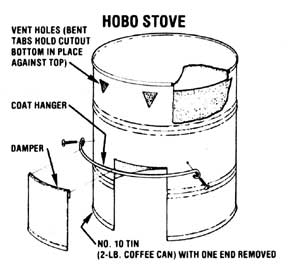

The ancestry of the hobo stove can be traced back to the invention of the No. 10 tin can. The device became prominent during America's Great Depression, an economic tragedy that thrust a great many people into the unfamiliar role of vagabond, making them take advantage of whatever resources appeared. The No. 10 tin was a product of the period of relative affluence that immediately preceded the crash of 1929, and it was seized by the nouveau bum community as a staple of survival. The tin was used as stove, water carrier, serving dish, suitcase, and sole eating container for an enormous migrating society. As such, it became one of America's most cherished resources.
The stove that was fashioned by these knights of the open road was ingenious, efficient, and practical . . . and it's lost none of those qualities today. For the low-budget backpacker, it offers the added advantages of being lightweight, easy to use, and compact to carry because other cooking utensils can be nested inside.
Because of its double-thickness top, the hobo stove retains heat, distributes it evenly across the upper surface, and prevents rapid burnout of the can, which otherwise could occur. Since the fire is almost entirely contained within the small tin, and the amount of heat generated and transferred to the cooking surface is enormous, it's important to remember to use only pencil-sized bits of wood for the fire. By using the damper, you can control the intensity of the fire and keep it at the proper cooking level.
BUILDING THE HOBO STOVE
First, as shown in the drawing, remove the bottom from a No. 10 tin can and cut a 4"-rsquare door along the lower margin of the container. Now, flip the can over and drop the detached bottom inside so that it rests on the inside of the top. Still holding the can upside down, punch several smoke holes around the top rim with a can opener. The can-opener tabs will keep the second lid-the piece you cut out of the bottom - in place so it can act as a durable double top when the can is turned right side up.
Next, just above and at each side of the 4"square door, drill or punch two small holes. Insert a bolt through each hole and secure it loosely in place with a washer and nut on the inside. Now, attach the ends of a piece of stif wire (a coat hanger or baling wire will do) to the bolts, as shown, and tighten them securely.
Finally, take the 4" square you removed from the tin and bend the top of it over the wire. You can open and close this makeshift "damper" as needed to keep the fire at the correct level.
That's all there is to the construction of the hobo stove!
The pain of the Depression has been diminished by the passing of generations, and today we can enjoy the hobo's necessity as a recreational tool. It's an interesting artifact from the past and an efficient outdoor cooking system for the present.
From Make It and Take It: Homemade Gear for Camp and Trail by Russ Mohney.
Copyright © 1977 by Pacific Search Press, Seattle, Washington. Adapted with permission of the publisher.
|
 |
|
|